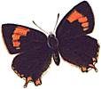
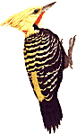
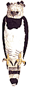
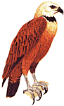

Memorias de un Viaje Fantástico
- Parte 2
PARTE II
El viaje a Iguazú vía El Soberbio y San Pedro. Parque Nacional
Iguazú: las Cataratas, el Sendero Macuco y Güirá Ogá
- "La Casa de las Aves". La vuelta.
Accesos Rápidos:
Miércoles
28
Es la última mañana
en Moconá. Aún está casi oscuro pero ya tenemos una nueva
especie. Se anunció con su repetido, sonoro y enfático “Chiów”:
era el grito de un Halcón Montés Chico, única rapaz selvática
de este safari que el grupo pudo observar bien, posado en un árbol, a corta
distancia. Recuerdo luego la caminata hasta la cascada próxima al camping.
Y recuerdo cuando el guía nos señaló la voz del muy raro
Batará Gigante. Lamentablemente no hubo tiempo para atraerlo con las grabaciones
de audio desde su distante escondite. En una hora debíamos estar todos
en el micro, rumbo a San Pedro.
Bajamos la carpa y enrollamos las
bolsas de dormir. Toda la infraestructura campamentista fue nuevamente cargada
al camión, mientras que los viajantes subimos al colectivo para comenzamos
lo que sería una larga jornada de viaje. Debido al mal tiempo de la víspera,
se había decidido un cambio de ruta. El retorno sería vía
El Soberbio, una localidad ubicada sobre el margen del Río Uruguay, aguas
abajo de Moconá. A medida que nos acercábamos, empezamos a ver
extensiones de cultivos, donde la selva, que una vez había crecido allí,
había dejado de existir para siempre. Los lugareños cultivan un
pasto, llamado citronella, que se utiliza para elaborar esencias que perfuman
todo tipo de productos de uso doméstico: desinfectantes de baño,
espirales contra mosquitos, etc. Sumado a esto, vimos numerosos aserraderos
donde pudimos constatar camiones cargados con troncos de arboles nativos. Y
también extensas áreas de plantaciones de pino. ¿Qué
podemos hacer para frenar ese paulatino avance de la frontera colonizadora?
Una breve siesta en el micro no fue
suficiente para recuperar el desfasaje causado por los extenuantes días
en Moconá. Pero ya nos acercábamos a San Pedro, para visitar uno
de los últimos relictos que queda de Pino Paraná, es decir, los
sorprendentes Araucarias. Aterra pensar que ese magro y ralo bosque, o mejor
dicho, ese abierto descampado salpicado aquí y allá de algunos
ejemplares, es todo lo que queda de esta variedad selvática de Araucarias
en la Argentina. [Ver Nota de Incendio en La Nación].
Pero era suficiente para albergar las dos especies de aves que fuimos especialmente
a buscar ahí: el Coludito de los Pinos, y el Loro Vinoso, que se halla
en muy serio peligro de extinción. Recorriendo el parque durante un par
de horas, tuvimos la suerte de observar a ambas especies. Aprendimos que estas
aves se encuentran allí por que sus vidas dependen de estos árboles.
Pronto cayó la noche, y comenzamos
el tramo que faltaba. Destino: Iguazú
Llegamos al camping “Americano”, cerca de Puerto Iguazú, pasadas las
11 de la noche. Todos a trabajar, bajando carpas, comida y valijas. Facundo
a cocinar. Los demás a poner su carpa. Determiné el mejor lugar,
si bien presentaba un leve declive. Pero subestimé el grado de inclinación.
Como ubiqué la cabeza de la carpa en la zona más alta, Nicolás
y yo pasamos esa noche ascendiendo, una y otra vez, la misma cuesta para así
poder mantener nuestras piernas extendidas. Aún así, en dos de
las 3 noches, Nicolás se despertó con frío, con sus piernas
asomando por fuera de la carpa hasta pasando las rodillas. Hasta hoy no hemos
podido resolver cual ha sido el enigmático artificio sonámbulo
que utilizó para terminar en esa posición.
Jueves
29 
Cataratas. Fue un día dedicado
al turismo escénico. Igualmente pudimos agregar varias especies de aves,
pero la belleza y formidable fuerza de las aguas capturó casi toda nuestra
atención. En la visita a la Isla San Martín pude hacer mi primer
acuarela del viaje y vimos de manera espectacular a la Saira Arcoiris, con sus
colores iridiscentes. Nuestros guías se apostaron con sus telescopios en
las pasarelas próximas al salto Bosetti, donde ya había bastante
público, y gracias a este instrumento óptico pudimos observar los
increíbles Vencejos de Cascada que se zambullen debajo del torrente para
llegar a sus nidos. Inclusive invitamos a los demás turistas a mirar por
el costoso dispositivo óptico, oportunidad por la que seguramente estaban dispuestos
a recompensar con una saludable propina, ciertamente rechazada, y que produjo
simpáticas sonrisas.
Por la tarde el micro nos llevó a Puerto Canoas, y tras tomar la lancha
hasta la Garganta del Diablo, nos acercamos hasta quedar a metros nomás
del lugar más violento de la provincia. Mucha gente vino, miró y
se fue. Para muchos de esos turistas, esta visita era el único motivo que
tanto los había alejado de sus casas - quizás desde otra provincia,
otro país, o incluso de un hogar a dos continentes de distancia.
Reflexioné qué tan diferente era nuestro caso. En la pasarela había
algunas mariposas fantásticas. Volando bajo sobre el agua del Iguazú
Superior había dos especies de Golondrinas que yo nunca había visto
antes, y que no se presentan en otro lugar del país. Había dos Cardenillas,
con sus cabecitas de color carmín claramente visibles sin binoculares.
Había Jotes y Biguás, y dos tipos de garza, una de las cuales hizo
una espléndida pasada planeando muy cerca de la pasarela. Pero, más
allá del puñado de observadores de la naturaleza que conformaba
el safari de Aves Argentinas, eran muy pocos los que notaban todo esto. ¡Cuanto
más aprovechamos este lugar! Las cataratas fueron verdaderamente fantásticas,
pero cuanto más fantástico ha sido tener otra inquietud a la cual
recurrir una vez que el rugido de las aguas se había distanciado.
Luego recorrimos con mi familia un
camino de tierra colorada, donde observamos una enorme mariposa "Morpho", y
donde mis hijas encontraron lo que para nosotros era una gigantesca hormiga,
muerta. Haciendo el trayecto de vuelta, Carolina detectó la presencia
de dos o tres monos Caí, que observamos dificultosamente entre las ramas.
Era la primera vez que estaba ante primates libres en su hábitat natural,
lo cual me conmovió. A partir de Darwin, estos son nuestros primos, pero,
al ir destruyendo su hábitat, ¡que difícil le estamos haciendo
las cosas! Parece que mientras más lejos nos mantenemos, mejor será
para ellos.
Luego, retornamos al camping.
En el medio de esa noche oí
las voces de dos lechuzas Alilicucu Común. Si bien no desperté
a mi hijo, era para mi un momento significativo, por que al oír esas
voces estaba amortizando el esfuerzo que significaba acampar, en lugar de dormir
cómodamente en una cama. Además de ser más costoso, al
dormir en la habitación uno no tiene la posibilidad de escuchar los sonidos
nocturnos. No obstante hecho el planteo a mi mujer de este convincente argumento
antes del viaje, pudo demostrarme que este razonamiento no era del todo correcto:
si hubiésemos dormido todos en carpa, nos habría faltado la interesante
oportunidad de conocer una pequeña rana que habitaba el inodoro del bungalow!
Viernes
30 
El objetivo del día era recorrer
el sendero Macuco. El mal tiempo amenazaba, pero felizmente se compuso. El grupo
se fragmentó, y recorrimos, cada uno a su ritmo, los 3 o 4 km de sendero,
donde encontramos una amplia variedad de aves nuevas. Por suerte no hubo otros
turistas, ya que se hubieran alarmado de ver a tanta gente haciendo chasquidos
con los dedos, a manera de castañuelas. Según aprendí ahí,
es la manera de invocar al Bailarín Blanco, una pequeña especie
que pocos del grupo habían visto, y que, a toda costa, ese día tenía que aparecer. Al fondo del sendero principal llegamos a un fabuloso mirador, y
bajamos por una picada con la vegetación más hermosa y variada que
haya visto jamás. Luego llegamos a orillas del Iguazú Inferior,
donde comimos nuestros sandwiches y donde pude pintar otra acuarela.
La vuelta fue similar, pero sin chasquidos, y con algún avistaje más.
Luego, en los saltos, recorrimos con mi familia la parte superior de las pasarelas
que no habíamos alcanzado a efectuar el día anterior.
Esa era la última noche del
safari. La comida fue un delicioso pollo al carbón, y luego hubo una
guitarreada utilizando un sonoro instrumento gentilmente cedido por la señora
de Juan Carlos Chébez. El excelente instrumentista y cantor, cuyo nombre
no recuerdo, tocó muchas hermosas y delicadas canciones folklóricas,
acompañado a dúo por Caro, quien con su bella y afinada voz nos
dejó asombrados de tan insospechado don.
Sábado
31 
Y empezó temprano el último
día, con el monocorde silbar de una lechucita Caburé Chico. Por
primera y única vez en este viaje se trataba de un ejemplar auténtico,
lo cual quedó comprobado al verlo a Germán muy ocupado con su desayuno.
La actividad del día sería visitar a Güirá Ogá
- "la casa de las aves" en Guaraní, ubicada muy cerca del camping.
Otros del grupo habían optado por otro destino: cruzarían la frontera
a Brasil.
Cruzamos la ruta, y pronto nos encontrábamos
en Güirá Ogá. Este lote de selva de 22 ha es donde vive Jorge
Anfuso con su familia, volcados a la recuperación de aves heridas y,
en un futuro, a encarar la cría de especies en peligro de extinción,
en especial las aves rapaces. Jorge tiene experiencia en el tema, habiendo dedicado
parte de su vida a volar halcones en los aeropuertos, con la finalidad de dispersar
las bandadas de pájaros que constituyen una amenaza a los aviones durante
el despegue.
Durante la primera hora nos internamos
por un difícil sendero de la selva. Tan lento era el avance entre las
cañas de Tacuarembó que finalmente decidimos volver. El denso
follaje dificultaba la observación de aves. Pero, apenas comenzada la
vuelta, el fino oído de nuestro guía detectó la presencia
del Yeruvá. Comenzó entonces una prolongada sesión de grabación
y reproducción, que se coronó con el avistaje cercano de una pareja
de esta hermosísima y rara especie. Con la finalidad de realizar rápidamente
una acuarela de esta especie, me adelanté al grupo. Tras terminar el
cuadro, no encontré a la comitiva, pero me crucé con Enrique,
poseedor de un gran conocimiento y experiencia. Nos apostamos al costado de
un lindísimo arroyo mientras oímos las voces de muchas aves, invisibles
por la tupida vegetación. Los sonoros gritos de los carpinteros se confirmaban
por el maquetreo de sus picos contra los troncos y ramas. Intenté sin
éxito atraerlos golpeando una caña con un palo. También
había dos rapaces, un Taguató y un Halcón Montés
Chico, solamente detectables por su voz, pero muy próximos a nuestro
paradero, quienes mantenían un duelo telefónico para resolver
un conflicto de potestad por ese sector de selva. En el arroyo, los colores
y reflexiones en el agua eran muy hermosas. La luz del sol atravesaba la vegetación
de cañas y producía curiosas manchas de sombra marrón y
verde oliva en el soleado ocre. Finalmente fuimos recompensados con la llegada
de un Arañero Ribereño, que parecía utilizar el arroyo
como autopista para sus excursiones, recorriendo inquietamente los márgenes
mientras emitía continuamente su agudo “chip”. Vimos dos, o tal vez tres,
a muy corta distancia, gracias a la inmovilidad de sus fascinados espectadores.
El objetivo de Güirá
Ogá es rescatar aves en peligro de extinción. Muchas de estas
especies se pueden encontrar hoy en hogares de la zona, confinadas a jaulas
desde donde cumplen el entretenido rol de mascota. Desde su soledad no tienen
posibilidad de reproducirse y continuar la especie, y muchos dueños no
saben del valor biológico que allí retienen. Una de las actividades
de Jorge es recorrer las casas en donde ha oído de la existencia de ejemplares
de especies amenazadas de extinción. Esta tarea, como otras que realiza,
le insume tiempo y esfuerzo. Quice dejar una pequeña ofrenda a la persona
que había volcado toda su energía y entusiasmo a llevar adelante
tan encomiable tarea, y pensé en pintar una acuarela de alguna parte
del lugar. Si salía bien, se la regalaría. Como motivo elegí
el “Eco-shop”, un rústico ranchito con techo de paja que parece surgir
de la selva, en donde se venden libros, remeras y artesanías sobre flora
y fauna misionera.
La hija de Anfuso me ayudó
a instalarme, y empecé. Me cautivó la paz del lugar, y el silencio
de la selva, solo interrumpido por el escalofriante y repetido “ping” de un
Pájaro Campana, una rareza, que Jorge había recuperado, y que
estaba aún enjaulado. Avancé bien con el cuadro, pero pronto mi
tranquilidad fue interrumpida por un extraño visitante: Totó.
Es éste un Mono Carayá, que fue decomisado de algún contrabando,
y puesto en manos de Jorge. Junto a su similar amiguito menor, Totó anda
por todas las instalaciones creyendose dueño. Y parece que yo era parte
de las instalaciones. Cuando vio mi tarrito de agua, vino a tomar de ahí.
Era agua donde yo enjuagaba el pincel y tuve que impedir que la tome por que
seguramente es algo tóxico. Luego saltó a mis faldas - donde estaba
apoyado mi block - y manchó el papel del cuadro con la tierra roja. Tuve
que poner la jarra en el piso y levantar el block de papel en el aire. Luego
atacó mi tableta de pinturas, que tuve que levantar con la otra mano.
Ya parecía Cristo en la cruz. Luego vino su amiguito y tuve que poner
mi pié sobre el jarrón para que no tome. Luego se colgó
del trapo que pendía de una de mis manos extendidas. Finalmente abandoné
mi silla y corrí al Eco-Shop con mis cosas. Me siguieron. Abandoné
el cuadro como estaba y se lo regalé espontáneamente a Jorge,
que justo pasaba por el lugar. Algún día me encantaría
ver cómo salió!
Volví al camping. Me enteré
que el resto del grupo, junto a Nicolás, había partido a Puerto
Iguazú para visitar el "Jardín de Picaflores", una casa
de familia en el pueblo cuyo jardín es muy visitado por numerosas especies
de picaflores. ¿Por qué se congregaban ahí? Por la presencia
de "comederos" con néctar artificial. En este safari habíamos
visto hasta ahora solo tres especies de picaflor, así que esto era una
oportunidad más que interesante. Por suerte Nicolás pudo observar
varias especies inusuales y hermosas, revoloteando a muy corta distancia. Volvió
encantado de tan curioso espectáculo.
Ese día mi hija menor se sentía
muy enferma, con una fuerte descompostura. Se había quedado adentro toda
la mañana, acompañada por mi esposa y mi otra hija. La menor estaba
en la cama toda tapada, inmóvil. No tenía buen aspecto. Era una
pena y lamenté que la nena no podría venir a Güirá
Ogá esa tarde. Para no molestarla, conté a mi esposa en voz muy
baja las aventuras de la mañana. Que vimos el Yeruvá y el Arañero
Ribereño, que pinté un cuadro... y que un mono se me había
saltado encima... Ni bién dije eso, mi hija resucitó de entre
las sábanas y se sentó brúscamente en la cama, y, con cara
de halcón miró fijamente unos instantes, y luego dijo, en el tono
más severo y autoritario que conozco: “¡Yo voy a ir!”.
Así es cómo, por última
vez en este safari, los cinco salimos del camping para visitar Güirá
Ogá. Por su puesto mis chicos tuvieron la esperada oportunidad de conocer
a Totó. Jorge nos mostró los animales que tiene en cautiverio,
incluyendo algunos cedidos por un instituto que aparentemente cerró sus
puertas. Ahí vimos en cautiverio diversos loros casi extintos y fabulosas
rapaces selváticas, cuya observación en el medio natural es muy
inusual: un Aguila Crestuda Negra, una Crestuda Real y un Aguila Viuda. La mayoría
de estos rarísimos animales fueron tratados para salvarlos de serias
heridas infligidas por chacareros, intentando proteger a sus gallinas al ser
atacadas. Jorge nos contó de las dificultades que deben ser superadas
antes que una de estas aves se encuentre lista para ser re-introducida, es decir,
liberada. En cada recinto Jorge tenía una interesante historia que contar,
y así se acercaba el fin del día.
De repente noté que el sol
estaba muy bajo. Poco tiempo quedaba ya para disfrutar la verde maraña
de la selva. En pocos minutos más ya no podría advertir el color
rojo del camino. ¡Había llegado el momento de comenzar a despedirme
de Misiones! Entonces pasó una de esas curiosidades. Subiendo el tronco
de uno de los tantos arboles que bordeaba el estacionamiento apareció
el gran Trepador Garganta Blanca. Lo conocía bien, por ser la primera
especie que había visto en Misiones, hace casi 7 días, al llegar
a Salto Encantado. Era como si nuestro primer amigo alado hubiera volado hasta
Iguazú especialmente para despedirnos. Y así fue también
la última especie que vimos.
Se
hizo la noche, y ya estábamos cómodamente instalados en el micro,
volviendo a casa.
Domingo
1 
Siempre viajando en el micro, y tras
la larga y semi-cómoda noche pasada en el asiento, había tenido
tiempo para digerir la difícil noción que el viaje llegaba a su
fin. Pero, tras una parada para desayunar, Nicolás y yo aguardábamos
un momento emocionante del safari: la confección de la “lista oficial”
de aves. Nuestro guía, micrófono en mano, anunciaría todas
las aves que fueron vistas. Desde luego, era un evento participativo, y todos
podíamos aportar alguna especie vista, pero solo si había certeza
en la correcta identificación. Nicolás y yo teníamos una
especie bajo la manga, y confiábamos que ningún otro la tendría
registrada. Llegó el momento de anunciarla, pero como el Bingo, otro cantó
primero, y perdimos la oportunidad de brillar con nuestro aporte.
Así, en total, la lista oficial
contenía 203 especies de aves. En nuestro caso, Nicolás y yo sumamos
casi 140, de las cuales 96 fueron nuevas. Será probablemente la primera
y última vez que, en una salida, junte tantas especies nuevas de aves
autóctonas argentinas.
Y cómo dicen,
queda comprobado que 100 ojos ven más que 4.
Nuestra lista de aves
se adjunta en el Apéndice 1.
FIN PARTE II
VOLVER
A LA PAGINA PRINCIPAL DEL SAFARI A MISIONES
VOLVER AL MENU DE RELATOS |